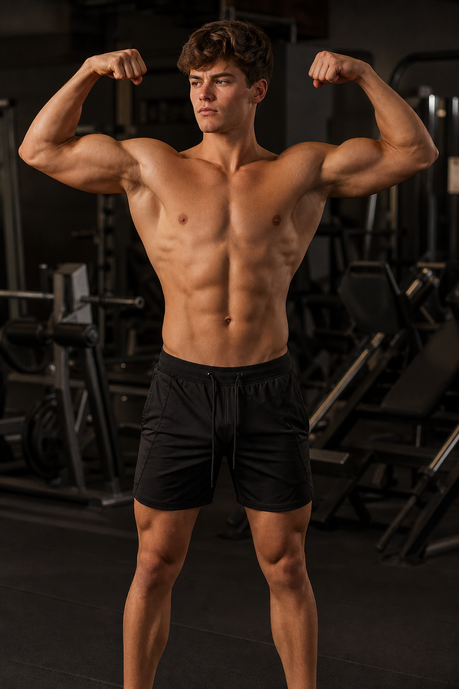

Foto AIAllenarsi con metodo, settimana dopo settimana
Forza in palestra. Costanza nella vita.
Il mio diario di allenamento: la scheda del macrociclo, le sessioni con i dati dell'orologio e il racconto del percorso.
Macrociclo 2026–2027 · 3 sedute a settimana
Foto AI: immagine illustrativa generata con IA, non una foto di Nicola · Trasparenza AI
Poche regole, tenute nel tempo
Tre seduteLunedì AB, mercoledì AC, sabato CB: una settimana semplice da seguire.
Parte alta in prioritàIl volume va in priorità a petto, schiena, spalle e braccia. Le gambe restano in mantenimento.
Niente numeri inventatiSessioni e carichi si scrivono solo quando esistono: se un dato manca, resta vuoto.
Quattro fasi da circa tredici settimane
Il ciclo dura un anno: quattro fasi, tre schede a settimana, durata delle sedute che sale con calma da 45 a 55 minuti e poi al massimo 60. Diario e allenamenti restano due spazi separati.
Dati del programma, non promesse
Inizia dal Diario o dagli Allenamenti
Due spazi separati, un percorso reale. Scegli da dove partire.